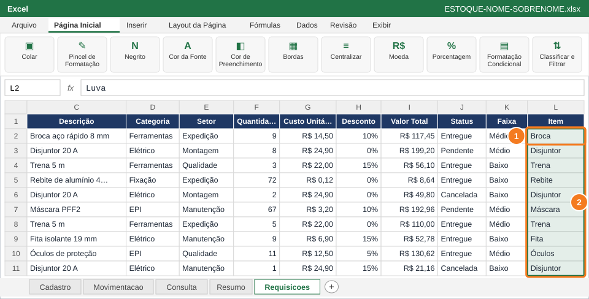

Deixar a base fácil de ler na tela e no papel: congelar painéis, cabeçalho com quebra de texto, página em paisagem, títulos repetidos e entrega do arquivo final.
Você vai usar
Congelar Painéis
Preenchimento Relâmpago (Ctrl+E)
Alinhamento e quebra de texto
Orientação e Margens
Configurar Página
Salvar Como .xlsx
Aba de trabalho:Requisicoes · Slides de apoio: Arquivo 3 — slides 31–32; Arquivo 4 — slides 20–21 e 37
1
Congele a linha dos títulos e as duas primeiras colunas
Role para baixo e para a direita: o cabeçalho e as colunas Data e Código ficam parados.
✅ VerifiqueAo rolar até a linha 100, os títulos continuam no topo e as colunas Data e Código continuam à esquerda.
🐧 No LibreOffice CalcSelecione C2 → Exibir → Congelar células → Congelar linhas e colunas.
2
Extraia o nome curto do item com o Preenchimento Relâmpago

Em L2 (1) digite a primeira palavra da Descrição; selecione L2:L121 (2) e pressione Ctrl+E.
Em L1 digite Item e copie o visual do cabeçalho com o Pincel.
Em L2 (1) digite só a primeira palavra da descrição da linha 2, por exemplo Luva.
Selecione L2:L121 (2) e pressione Ctrl+E: o Excel reconhece o padrão e preenche a coluna inteira.
💡 DicaFunciona porque o Excel percebe o padrão "primeira palavra". Se algum item tiver o nome fora do padrão, corrija a linha e pressione Ctrl+E de novo.
🐧 No LibreOffice CalcNo Calc, use Dados → Preenchimento Relâmpago (ou a fórmula =ESQUERDA(C2;LOCALIZAR(" ";C2)-1)).
3
Deixe o cabeçalho com quebra de texto e altura maior